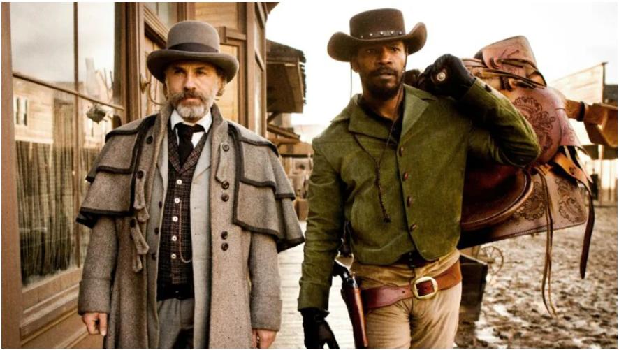

Django Livre
Com a ajuda de um caçador de recompensas alemão, um escravo libertado sai para resgatar sua esposa de um brutal dono de uma plantação no Mississipi
Clique aqui para saber mais!Com a ajuda de um caçador de recompensas alemão, um escravo libertado sai para resgatar sua esposa de um brutal dono de uma plantação no Mississipi
Clique aqui para saber mais!Norbit passa por muitos perrengues na vida e com sua garra e determinação consegue superá-los com muita comédia e resiliência
Clique aqui para saber mais!
Em seu 4º ano na Escola de Magia e Bruxaria de Hogwarts, Harry Potter (Daniel Radcliffe) é misteriosamente selecionado para participar do Torneio Tribruxo, uma competição internacional em que precisará enfrentar alunos mais velhos e experientes de Hogwarts e também de outras escolas de magia. Além disso a aparição da marca negra de Voldemort (Ralph Fiennes) ao término da Copa do Mundo de Quadribol põe a comunidade de bruxos em pânico, já que sinaliza que o temido bruxo está prestes a retornar.
Clique aqui para saber mais!
O Hobbit: Uma Jornada Inesperada acompanha Bilbo Bolseiro (Martin Freeman) que vive uma vida pacata no condado, como a maioria dos hobbits. Um dia, aparece em sua porta o mago Gandalf, o cinzento (Ian McKellen), que lhe promete uma aventura como nunca antes vista. Na companhia de vários anões, Bilbo e Gandalf iniciam sua jornada inesperada pela Terra Média. Eles têm por objetivo libertar o reino de Erebor, conquistado há tempos pelo dragão Smaug e que antes pertencia aos anões. No meio do caminho encontram elfos, trolls e, é claro, a criatura Gollum (Andy Serkis) e seu precioso anel.
Clique aqui para saber mais! Alice (Mia Wasikowska) é uma jovem de 17 anos que passa a seguir um coelho branco apressado, que sempre olha no relógio. Ela entra em um buraco que a leva ao País das Maravilhas, um local onde esteve há dez anos apesar de nada se lembrar dele. Lá ela é recepcionada pelo Chapeleiro Maluco (Johnny Depp) e passa a lidar com seres fantásticos e mágicos, além da ira da poderosa Rainha de Copas (Helena Bonham Carter).
Clique aqui para saber mais!
Alice (Mia Wasikowska) é uma jovem de 17 anos que passa a seguir um coelho branco apressado, que sempre olha no relógio. Ela entra em um buraco que a leva ao País das Maravilhas, um local onde esteve há dez anos apesar de nada se lembrar dele. Lá ela é recepcionada pelo Chapeleiro Maluco (Johnny Depp) e passa a lidar com seres fantásticos e mágicos, além da ira da poderosa Rainha de Copas (Helena Bonham Carter).
Clique aqui para saber mais!
 Scott Pilgrim (Michael Cera) tem 23 anos, integra uma banda de colégio, vive trocando de emprego e tem um namoro firme. Sua vida está maravilhosa, até conhecer Ramona V. Flowers (Mary Elizabeth Winestead). Ele logo se apaixona perdidamente por ela, só que não será fácil conquistar seu amor. Para tanto ele precisa enfrentar os sete ex-namorados dela, que estão dispostos a tudo para impedir sua felicidade com outra pessoa.
Clique aqui para saber mais!
Scott Pilgrim (Michael Cera) tem 23 anos, integra uma banda de colégio, vive trocando de emprego e tem um namoro firme. Sua vida está maravilhosa, até conhecer Ramona V. Flowers (Mary Elizabeth Winestead). Ele logo se apaixona perdidamente por ela, só que não será fácil conquistar seu amor. Para tanto ele precisa enfrentar os sete ex-namorados dela, que estão dispostos a tudo para impedir sua felicidade com outra pessoa.
Clique aqui para saber mais!